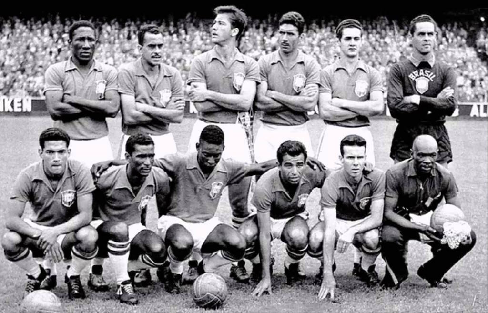
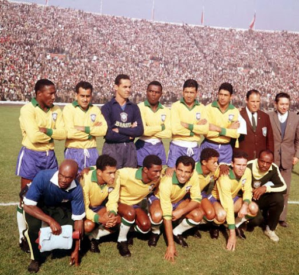
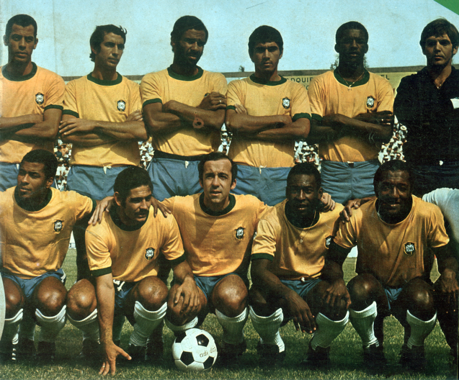
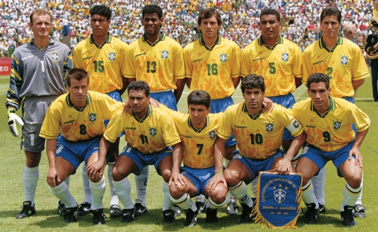
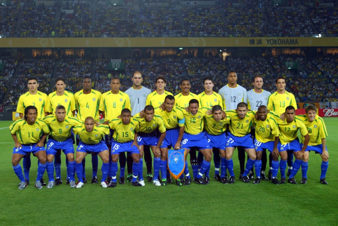
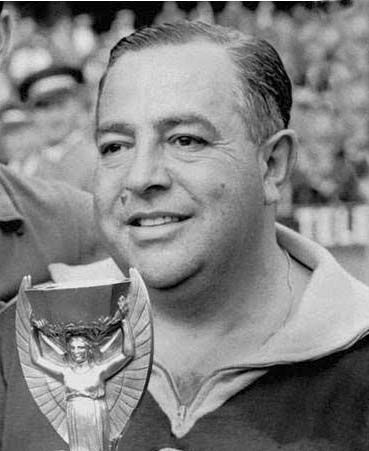
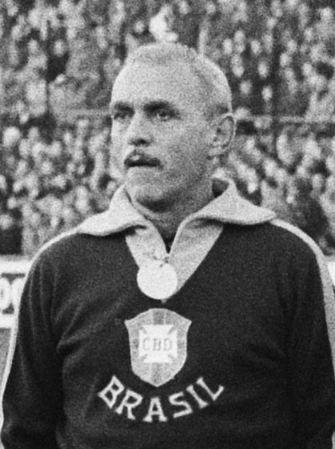
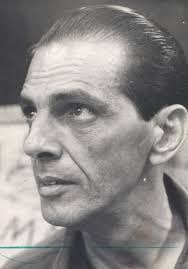
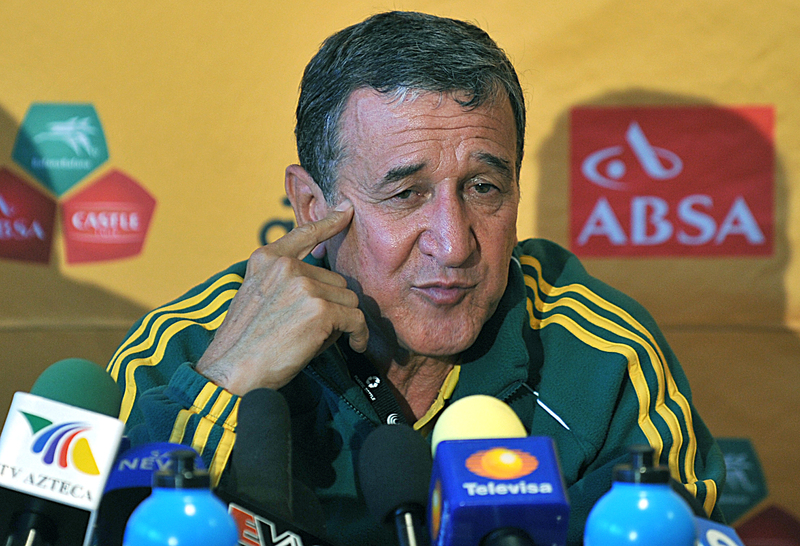
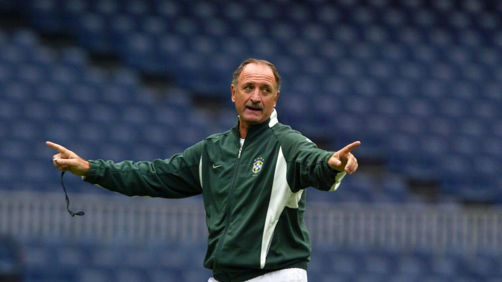

Brasil, o país do futebol!
Sendo o único pentacampeão mundial, nós somos o maior vencedor do maior campeonato do mundo!
Temos os considerados melhores jogadores de toda a história do futebol, inclusive o nosso eterno Rei Pelé.
O Brasil ganhou a Copa do Mundo da FIFA cinco vezes, sendo o maior campeão da história do torneio. Os anos das conquistas são: 1958, 1962, 1970, 1994 e 2002.
Nossas Conquistas

Seleção de 58
O Brasil enfrentou e derrotou a seleção da Suécia por 5 a 2.

Seleção de 62
A grande final foi contra a Tchecoslováquia, vencida pelo Brasil por 3 a 1.

Seleção de 70
O Brasil enfrentou e ganhou da Itália pelo placar de 4 a 1.

Seleção de 94
O Brasil superou a Itália na disputa por pênaltis (3 a 2), após empate em 0 a 0.

Seleção de 2002
O Brasil bateu a Alemanha por 2 a 0, conquistando o pentacampeonato.
Os Comandantes do Penta
Tivemos uma jornada longa e desafiadora, liderada por técnicos inteligentes e táticos que guiaram nossa nação rumo à vitória!

Vicente Feola (1958)
O seu destaque foi a aposta e a insistência na convocação de um jovem Pelé, que tinha 17 anos e viajou lesionado.

Aymoré Moreira (1962)
O grande destaque foi Garrincha, que assumiu o protagonismo absoluto da equipe após Pelé sofrer uma lesão grave.

Zagallo (1970)
Foi o mestre Zagallo quem assumiu o comando técnico na Copa de 1970, organizando o time perfeito que encantou o mundo.

Carlos A. Parreira (1994)
Quebrou um jejum de 24 anos sem títulos mundiais do Brasil com um esquema tático sólido, eficiente e pragmático.

Luiz Felipe Scolari (2002)
Marcado pela criação da "Família Scolari" e pelo ajuste tático inovador utilizando uma linha de três zagueiros.